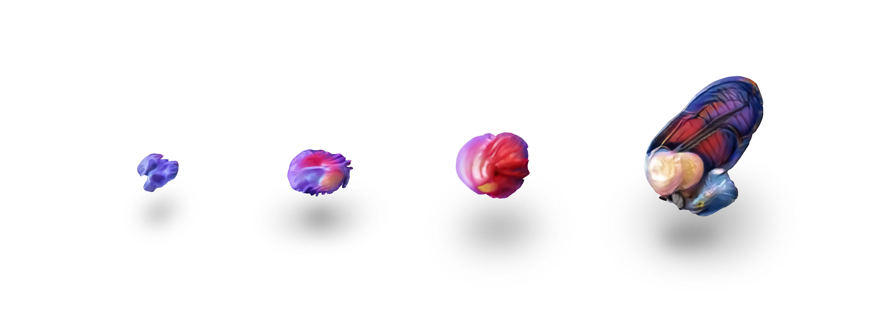
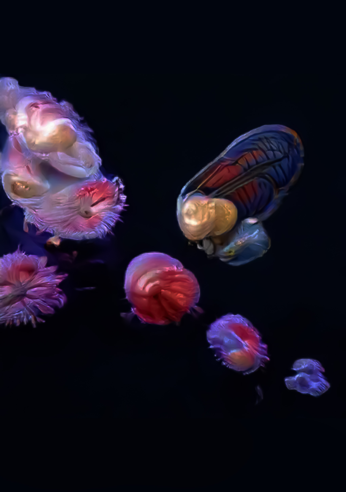

0097
Limacina helicina
Kingdom: Animalia
Phylum: Mollusca
Class: Gastropoda
(unranked): clade Heterobranchia
Family: Limacinidae
Genus: Limacina
Species: L. helicina
Limacina helicina is a species of small swimming planktonic sea snail in the family Limacinidae, which belong to the group commonly known as sea butterflies (Thecosomata).
Limacina helicina is a keystone species of mesozooplankton in Arctic pelagic ecosystems. The first written record of this species was by Friderich Martens from Spitsbergen in 1675. Limacina helicina was also observed during a 1773 expedition to the Arctic led by Constantine John Phipps on the ships HMS Racehorse and on HMS Carcass and the species was described one year later, in 1774.
Limacina helicina has wing-like parapodia which evolved from the original gastropod foot (as is the case in all other pteropods). In this species, the color of the soft parts is dark purple or violet, with paler pellucid (translucent) parapodia. The shell is sinistral, subglobose, subdiscoidal, hyaline and very thin. The spire is depressed but it can be considered rather high in comparison of other Limacina species. The shell has 5-6 transversally striated whorls. The suture is distinct. The last whorl is large and with very obscure keel next to its umbilicus. The shell has a wide umbilicus. The aperture is higher than it is wide. The width of the shell is 5–10 mm or up to 13 mm. The height of the shell is up to 6 mm (when maximum width was 8 mm).

Copyright 2021 by Nouveaux Specimens.
All Rights Reserved.